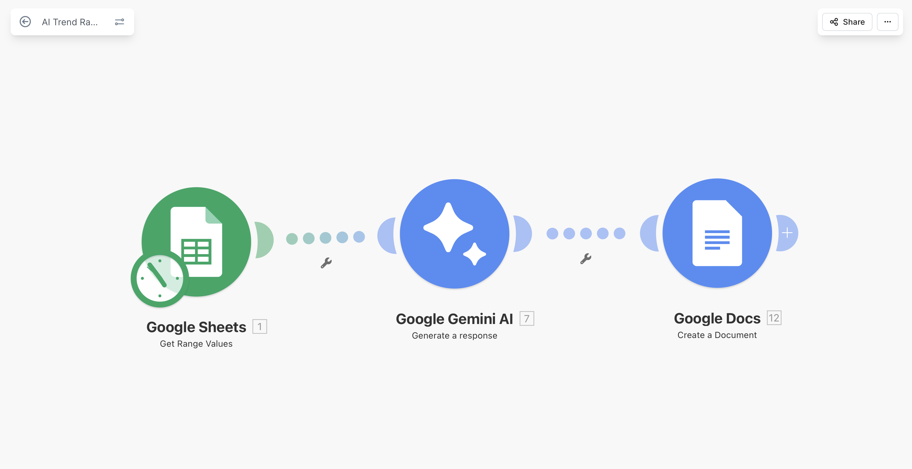

AI-powered system that analyzes large datasets and turns them into trends, patterns, and business opportunities.
This system analyzes large sets of articles stored in a database and uses AI to identify patterns, trends, and emerging topics.
Instead of manually scanning content, businesses receive structured intelligence including trends, key topics, and opportunities that are automatically generated.
The system builds on a continuously updated dataset of AI-analyzed articles, allowing it to detect patterns across large volumes of data instead of single pieces of content.
Fully automated workflow that transforms raw data into high-level intelligence reports without manual effort.
